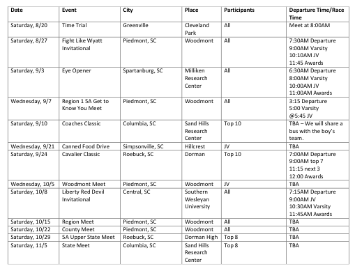
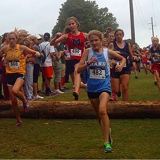
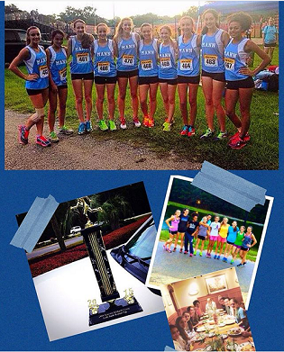

Cross country is a sport where individual athletes compete in a foot race over different surfaces such as grass, sand, and pavement. These races, usually 5 or more kilometers (3.1 miles or greater), are run all over the world. The unique part of this sport is the variety of conditions runners have to compete in, from rain, snow, hail, and extreme temperatures. As a high school runner, I am part of a team which competes with other teams in my school's county in various races, or meets. While we all might run alone, there is a team aspect of cross country that few sports have.
Here is the website for the J.L. Mann Athletics page for updates on the schedule for the cross country team and other athletic programs at J.L. Mann High School.
In my opinion, there are no losers when running cross country, but only one technical winner. There are two sub-teams within a cross country team: varsity and junior varsity. In varsity, there are eight runners who have the best 5K times of anyone on the team. An average of seven runners run in the varsity races with the eighth runner standing as the alternate if one of the seven gets injured. At the end of the race, the top five varsity runner's placing within each team adds to produce a team score for that race. The other two runners are pushers that can help if there is a tie. For example, the first place runner gets one point, second place gets two, third three, and so on. The team with the least amount of points (most top-placed runners) wins that race. This race is the race that really matters in terms of the team standings throughout the county.
The junior varsity is the sub-team where all of the other eligible runners are when it comes to racing. The top seven runners in the JV race will contribute to the team score for that race. This score will also contribute to the overall team score with the varsity in most races. In other races, the varsity score is the only score that matters. Junior varsity members can bump a varsity member out of their spot if the JV runner runs a faster time or if the coach feels more confident with one runner more than the other.
This year (2016-2017) will be my third year running cross country. I have run in both varsity and junior varsity races over the past years. I personally enjoy running in Junior Varsity races because they are usually much bigger in terms of population. Also, the JV races are not as important as the Varsity races which helps with the stress of getting a good time. The schedule of my meets is posted here:
My PR (personal record/best) is a 21:42 at the Lake Murray Invitational. This course was a very road-based course which made it faster than most other meets that are on grass and dirt. All of my times can be found at MileSplit, along with my team's overall times for every race this season.
I honestly do not know where I would be without cross country. This sport has made me realize a lot about myself as a person and an athlete. Running is not as easy as it sounds or looks. It takes much more individual effort and endurance than I originally thought and has made me a little tougher. The hardest part about cross country is having enough mental strength to believe that what you are doing is benefitting your health and your character.
I have made so many friends through this sport because we all know we are going through the same hardships together. During races, it is normal for teammates to cheer their teammates on while their teammates are running. Actually, this weekend I was at a meet and the school next to me cheered their teammates on so well that at the end of the race, their teammates passed at least two people before finishing, all because of the support. This feeling of support is my favorite part of participating in this type of sport. I get goosebumps whenever I am finishing a race and I hear my teammates screaming for me to give it my all. I have found that if I do not give it all I have at the end of a race, I find myself a little depressed knowing that I could have done better not only for myself but for my team. 
By Alison W.